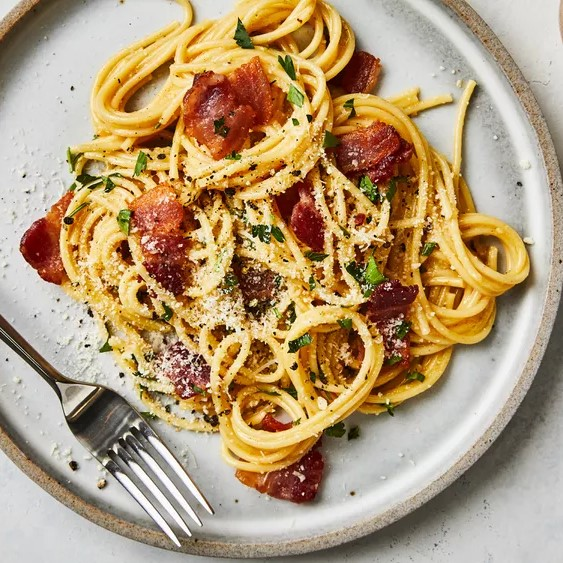

Home
Carbonara

Yummy pasta
Spaghetti alla Carbonara or simply Carbonara is a type of pasta dish. It is made with meat and an egg custard.
The meatcan either be guanciale or pancetta. The egg custard is made of egg yolks, black pepper and parmesan
and/or pecorino.
Some people claim that the name Carbonara comes from the black carbon look that the peppers give off.
Others believe that the origins of Carbonara come from an old dish eaten by shepherds in Lazio.
This dish was called cacio e ova.
Ingredients
- 200g spaghetti
- 100g guanciale (or pacetta)
- 30g Percorino Romano cheese (finely grated)
- 30g Parmesan cheese (finely grated) (optional but adds depth)
- Freshly ground black pepper
- Salt (for pasta water)
Steps
-
Cut the guanciale into small pieces and cook in a cold pan over medium heat until crispy.
Remove from heat but keep the fat in the pan.
-
Boil salted water and cook spaghetti until al dente, reserving about ½ cup of pasta water before draining.
- In a bowl, whisk egg yolks, grated cheese, and black pepper until smooth.
-
Add the drained spaghetti to the pan with guanciale and mix. Remove from heat.
-
Pour the egg mixture over the pasta, stirring quickly to create a creamy sauce.
Add reserved pasta water if needed.
- Adjust consistency with more pasta water, then serve with extra Pecorino and black pepper.